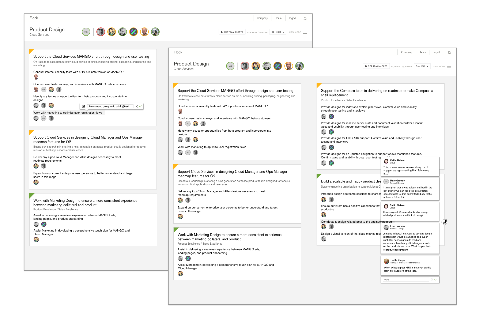
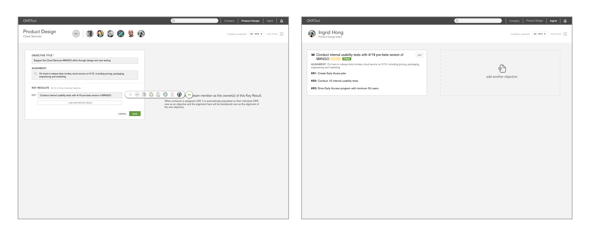
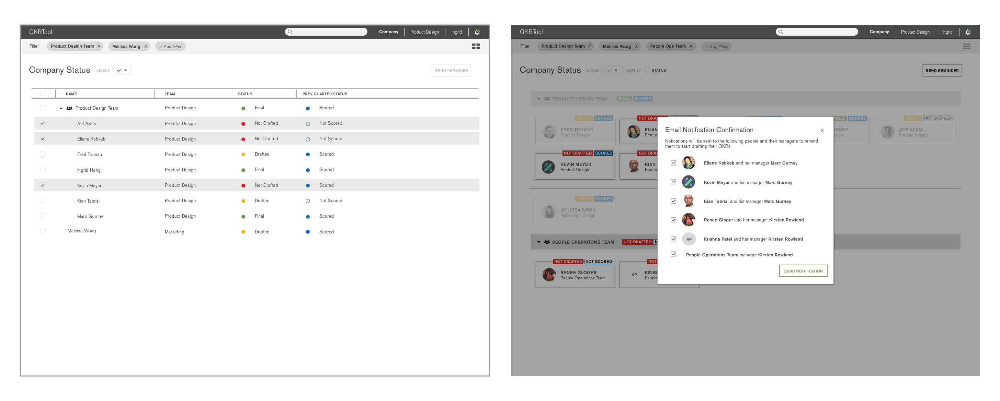

At MongoDB I worked on an OKR tool, conducted user persona research, and supported the design and cloud team with any design work
My main project for this internship was working on an internal tool for the entire MongoDB company. The challenge given was to create a web application that they could launch the next quarter for the entire company to track their objective and key results. This was because MongoDB was growing so big so rapidly, they needed a way to keep the company working together towards a unified goal despite the growing numbers. (More info on what is a OKR here). This meant everyone from the engineering to the marketing team to even the executive board would be using this product in a few short months. I along with another intern basically ran this entire project ourselves as lead designer and developer respectively. The PM called it 'a startup within a startup.'
We started with evaluating and writing out the design specs on what the project should entail. The developer looked at possible technologies we can build the application on top of and I looked at competitors such as 7Geese and Betterworks, entire companies with entire teams that worked on this one product that we were tasked to finish in less than 2 months.
Before this project, the company had just started doing OKRs; however, everything was organized in tabs in multiple Google spreadsheets which made the process time consuming and hard to use especially for managers that had to look through multiple sheets. Many of my initial interviewees from the survey I sent out equated this process to filing taxes - a necessary evil that you just want to get it over. From my competitive analysis, it looked like the other companies had too many features that we did not need such as a newsfeed feature or even the ability to award badges and send encouragement to one another. We wanted this tool to be a productivity tool, not a social media tool!
I started with sketching before doing a simple lo-fi version on Sketch to present to the PM on the status of the designs to gather feedback. Something I had in mind were grids/boxes because we wanted the site to also be responsive and easy to scale up as the company was to use this for many quarters to come. I also explored the idea of representing the company structure sorted as a tree (my computer science background kicked in here) and how that interaction would look like. The tree interaction ended up being the most complicated because I had to consider teams that were different sizes and some people were also across different (ie. managers were part of a team but also managed a team).
I presented my ideas to my team with these lo-fi mockups. The SVP of Engineering had called a meeting to check up with our progress with this project so I mocked these up quickly in less than 2 days. Some interactions I specifically explored included how a user would check alignment. With their old system, the only way they could do this was to click on multiple links and sub-links nested throughout multiple Google sheets. Here, you can see a clear structure of who and what is related to each other through a tree diagram. I also looked more into the tree to show team structure as well as searching for specific teams.
The feedback I got included the filter bar being confusing since it included groups but excluded the rest. It was inspired by the Pinterest filter bar, but in terms of people, it didn't make as much sense. For the create a new objective view, my team manager, Marc, who checkin on me suggested I explore more inline editing to mimic how Google Sheets did it so users would have a more familiar way of editing. I did get very positive feedback on the alignment sidebar though. Many people, sick of the nested links in the current system thought the idea that expressed the connection within the company visually made much more sense.
With all the feedback in mind, I redesigned and broke down screens into specific interaction actions so I could plug them into Invision and user test them. The first set, above, were the first few screens I showed to my users which were the user page to create their individual and team OKRs. The screens above were for teams, such as the product design team, to come together and set goals/assign responsibility for each task. My goal was to make the process painless and easy as possible as this was one of the most painful features in the current system. I made the process form like in which the user is guided step by step through entering their info and selecting the assignee. At the end of the process, the user can also select what is the status of the task. One important feature that I designed to make this process easier was autocomplete. The autocomplete will automatically populate from your supervisor or people you search above you. The current system at the time required the user to manually go through excel sheets to find their supervisor's information. Here, it is provided for you.
The next set of screens were for other members of the team and anyone in the company to comment on a person or team’s page. I used inline commenting, mimicking how Google docs does commenting for this feature. Since everyone at the company use Google docs/sheets, it would be an easier interaction to learn.
With these screens, as well as a few handfuls more, I reached out to MongoDB employees, most which I have never met or even heard of, to test my product.The user testing provided valuable insight and made me realise I should definitely user test way more often. I had to redo a whole lot of screens to change small interactions that people found confusing which was a pretty tedious process. Through user testing, some things I found out were a) the owner assignment interaction was a bit confusing since I didn't indent or make each Key Result evident as separate things, everyone just merged together (first set on the right). The status picker was also confusing as the only indication was the little triangle on the right. Even though that was how Google sheets does it, didn't mean people necessary understood what it was. Also, users didn't realize the top bar was a top bar as it was the same color as the rest of the page body. Let's fix that.
These are the second main group of screens after my redesign. As you can see, I changed the nav/top bar to black which kept with the MongoDB branding colours but made it more obvious it was separate from the rest of the page. When I tested these again, some on the same users I tested on before and some on people I have never met before from different teams, I found that the people/owner picker was way more easy to use. Instead of just have random faces indented, I created a popup pill box that showed people as well as the option to search and just type in someone's name if that is more efficient. I also redid the status picker too to buttons instead of a small triangle. However, users still found it confusing as it wasn't easy to understand that you can click on what looks like a label.
Some positive points was that users liked the walkthrough copy on the side and thought the overall process was easy to understand. I just had some small interactions, buttons, and iconography that I should clear up.
These last set of screens were for the Company views. The managers I spoke to during user testing all expressed a need for an easy way to keep track of the teams the are on. To do this, I designed a system in which they can search by their team or even by individual and see each individual status. I also explored a grid/title view in which the user can visually see the people and click on specific people to send notification or reminder emails to. However, even though it was relatively easy to use as I found through user testing, some of the colour choices needed to be tweaked as it was a little be overwhelming. With that in mind, I started redesigning. But time was running out!
I only interned at MongoDB for 10 weeks. I worked the first 3-4 weeks on the user persona project (see below) so I had less than 2 months for this. By the last 3 weeks or so, we realised we didn't have any front-end design for the actual app despite all the designs and iterations I have done. The developer was focused solely trying to hack together the back end and making things work with react.js that he kept the front-end relatively not styled and simple. The PM really wanted an MVP before we left, so I jumped on and instead of iterating designs through Sketch, I just coded design changes via CSS, javascript, and jQuery on the react.js library. It was a bit of a learning curve at first as I didn't have much experience with the react.js library but, I quickly got ramped up and helped transform the front-end to something a little more like the mock ups. Before I left, I got the basic styling done for the user and team pages as well as set up the structure for the company views. The product design team is going to pick up where I left off and bring the MVP to life. This product is to be launched Q4, the fall quarter for the entire company to use. I will update this page when it is released.
Before I started the OKR project, I was tasked to redo MongoDB's user personas they had for their products. The company was rapidly creating new products; however, even though their products have expanded and diversified; they had not updated their user personas for awhile. This is a small project in which I learned how to contact and interview both internal stakeholders (from people on my team to the marketing director to the head of entire departments) as well as external customers whom I approached at MongoDB World, the company's annual conference.
Personas aren't cookie cutter. There is going to be overlap and edge cases that you have to figure out if it is one person or an unaccounted group you need to include. When I would make user personas in school or when I worked on smaller projects, my users were pretty specific and disjointed from each group. Since MongoDB is releasing more products for both tech and nontech people, they now have a wide range and rapidly expanding users from those who were trained in software engineering to those who might be technical PMs or just a hobbyist. I learned how to interview many different types of people and how to quickly ramp up to understand MongoDB's multiple products in a short amount time. I do not have something visual to show for this project, but feel free to contact me for further informations or questions.
This summer in New York taught me more than how to cram myself into the 1 train to get to work and that you should never buy Broadway tickets at the Times Square TKTS station because the Seaport one has no wait and just as wide of a selection.
This summer in New York at MongoDB has challenge me to grow both as a designer and also as a developer. I applied for this internship with MongoDB because I wanted to see what it was like working in-house at a tech company that was produced products for a niche group of technical users but it turned out for MongoDB's products as well as for the project I worked on, there were many more type of users and edge cases than I expected.
Ultimately, I learned
- Work fast to test often. Iterate quickly so you can have enough time (especially on a project that was timeboxed for such a short time) to change things as you get more feedback. By the last 3 weeks or so when we realized we had to work even faster so we could have the MVP ready in time - that's when I jumped in and started designing directly by styling the css and working on the jquery to help push it to the live application.
- Don't be afraid to fail. Even though the amazing design team at MongoDB already had set branding guidelines and conventions, they were also constantly innovating which allowed me to be creative with my design choices as well. In the beginning, I constrained myself, thinking I should keep things simple and standard in fear of making something that might be 'wrong' or 'ugly'. But I actually learned the most when I did miss an edge case or had to go back to fix something (or redo entire views) after user testing and feedback sessions. In addition, designing something that might not be exactly the same as everyone else on the team is okay! The team brought you in for a fresh perspective and if you didn't showcase your ideas, what's the point of that?